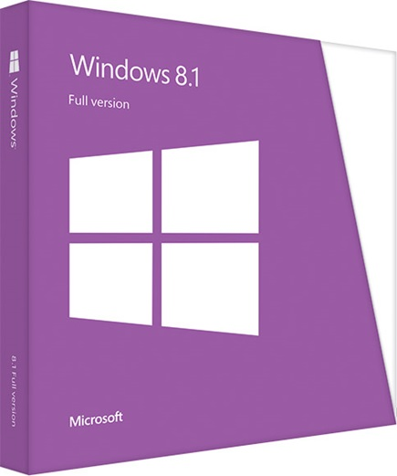
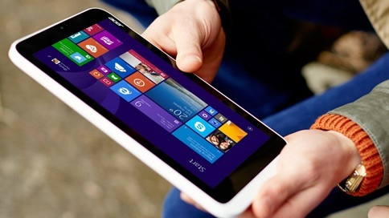

Windows 8.1 kemajuan visi Windows 8 menyediakan koleksi yang kuat dari aplikasi dan konektivitas awan pada perangkat yang besar; itu semua orang mencintai tentang Windows 8, ditambah beberapa tambahan. Windows 8.1 menggabungkan visi Microsoft inovasi dengan umpan balik pelanggan pada Windows 8 untuk memberikan banyak perbaikan dan fitur baru: lebih Mulai pilihan layar personalisasi yang disinkronkan di semua perangkat, pilihan untuk boot langsung ke desktop, Bing Smart Search sehingga Anda dapat menemukan apa yang Anda sedang mencari di PC atau web, tombol Start untuk menavigasi antara desktop dan Start screen, dan pilihan yang lebih fleksibel untuk melihat beberapa aplikasi sekaligus pada satu atau semua layar. Ada juga beberapa baru built-in aplikasi seperti Bing Makanan & Minuman, Bing Health & Fitness, dan utilitas aplikasi besar seperti Reading List, Kalkulator, dan Alarm. Banyak aplikasi yang besar dikirimkan dalam Windows 8 adalah kembali dan lebih baik, membuat pengalaman Anda lebih menyenangkan dari awal.

Selain pengalaman pengguna perubahan ini, Windows 8.1includes fitur baru dan perbaikan seperti Tempat Kerja Bergabung dan Kerja Folder yang memungkinkan perangkat Windows untuk menghubungkan lebih mudah untuk sumber daya perusahaan. Geek trivia: Power pengguna dengan multi-monitor sekarang dapat memiliki hingga empat aplikasi dari Toko Windows per layar muncul pada setiap monitor terhubung ke PC.
